猛暑時続き [梅吉]
リアル猫ヨガ [梅吉]
飛行猫２ [梅吉]
箱ねこ [梅吉]
あ、何かいます。箱？ねこ？
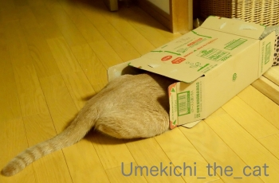
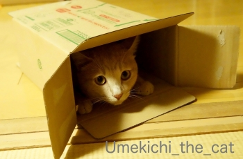
![[猫]](https://blog.ss-blog.jp/_images_e/101.gif) わし はこねこになってん
わし はこねこになってん
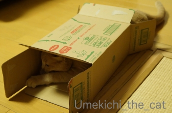
あ、動き始めましたよ。変身してるんでしょうか。
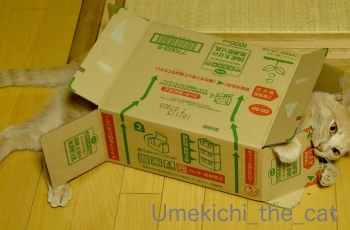
ちゃうやん とらんすふぉーむやで

やるで〜〜〜
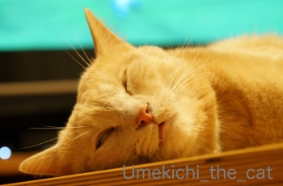
・・・・・
あれ？梅吉さん？進化の途中で白目寝ですか。
しろめおうじに とらんすふぉーむしたで

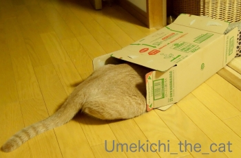
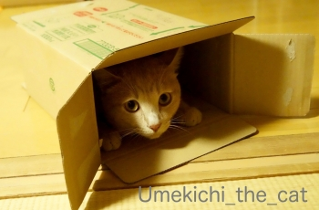
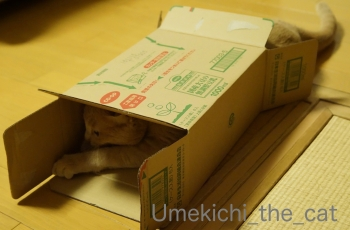
あ、動き始めましたよ。変身してるんでしょうか。
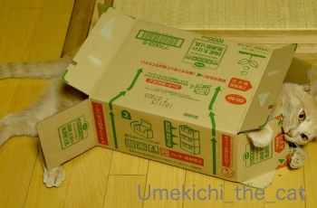
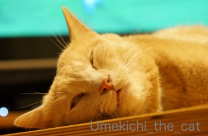
あれ？梅吉さん？進化の途中で白目寝ですか。
うっかりうっとりする梅吉さん [梅吉]
あら、男同士の戦いが始まりましたよ。
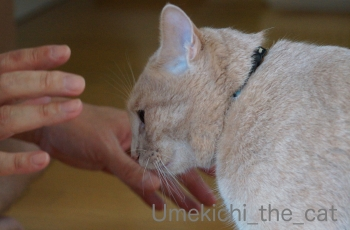
いくで〜
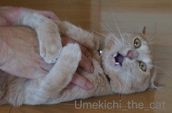
たぁぁぁぁぁぁ![[むかっ（怒り）]](https://blog.ss-blog.jp/_images_e/152.gif)
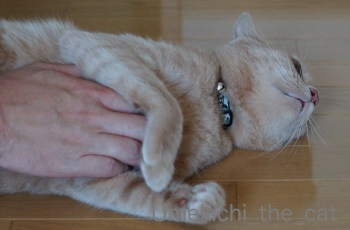
ん？？？？
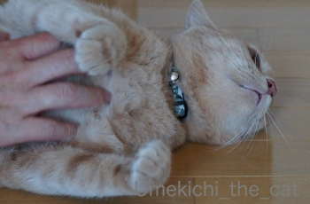
・・・・・・・
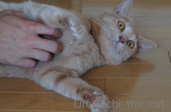
はっ！わしなにうっとりしてるんや！！
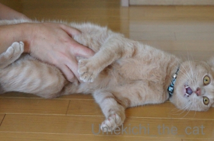
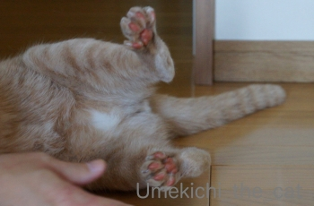
とぉぉぉぉぉぉ〜
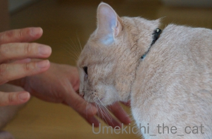
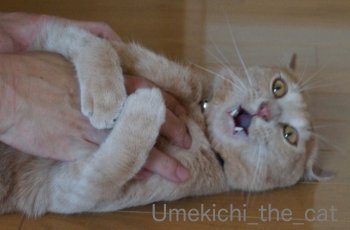
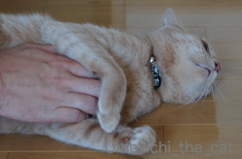
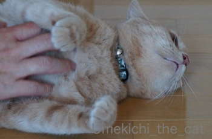
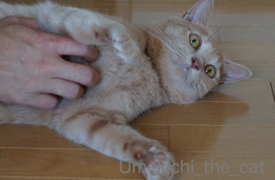
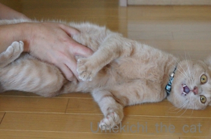
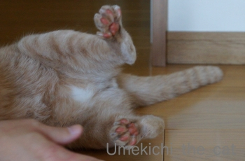
イカ耳 [梅吉]
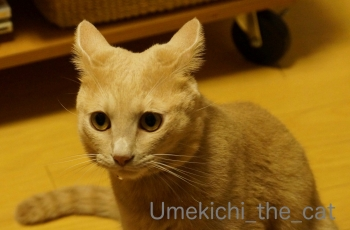
連日の猛暑日でお怒りなんでしょうか。イカ耳の梅吉さんですw
この画像コノハズクっぽいとご指摘をいただきました。
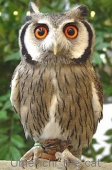
ほんとだ 笑
メンフクロウっぽいときもあるんです。
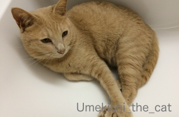
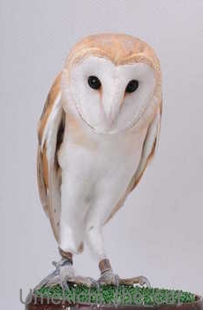
どうかなぁ。
冷やし肉球はじめました [梅吉]
外は約熱地獄、家の中だって30℃はある。
そんな中冷蔵庫の製氷機の扉をあけると・・・
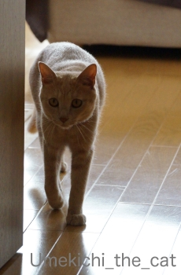
きたーっ、梅吉さんがきたーっっ
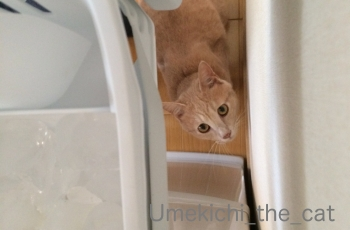
お目目きらっきらで製氷機を見上げます。
床がびしょびしょになるから氷なんてあげませんよ。あっ・・・・
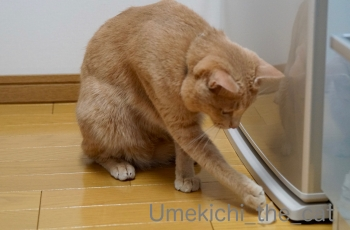
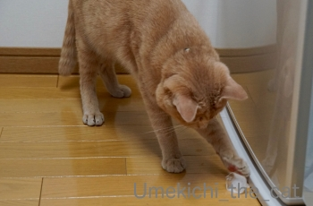
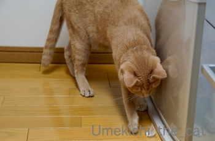
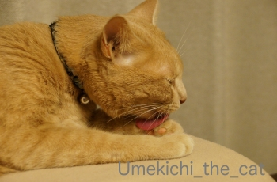
こんな涼の取り方もありでしょうか＾＾
ガブリエル CP2180 [梅吉]
梅吉さんはガブリエル。戦闘意識も高く技もなかなか。
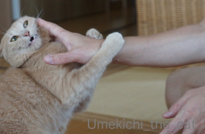
なんや、やるんか〜
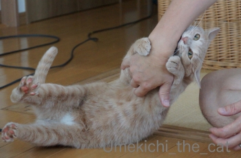
ガブガブするでー
根性もある。我が家のモンスター梅吉。
なので大喜利作ってみた（正確にはおっとに作ってもらった。笑）w
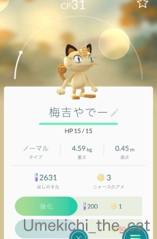
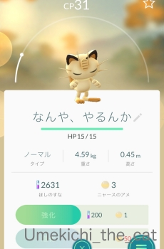
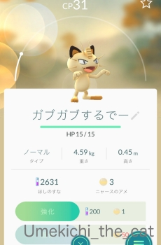
ファイター梅吉。画像ではCP低いですが本ニャンのCPは5000ぐらいあるぞ。
↑ガブッと一押し↑
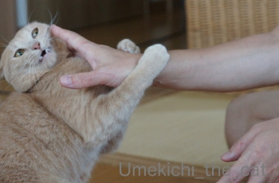
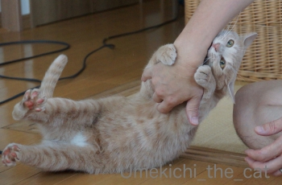
根性もある。我が家のモンスター梅吉。
なので大喜利作ってみた（正確にはおっとに作ってもらった。笑）w
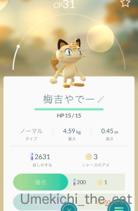
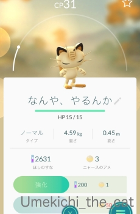
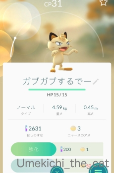
ファイター梅吉。画像ではCP低いですが本ニャンのCPは5000ぐらいあるぞ。

カフェオレ色の梅吉

梅吉 2023年8月10日 永眠


梅吉と出会った譲渡会

犬猫の理由なき殺処分ゼロ
妄想広告
UMEKICHI 光

爆発的に早い！
時々攻撃的！
Thanks to Mr.Boss365
爆発的に早い！
時々攻撃的！
Thanks to Mr.Boss365